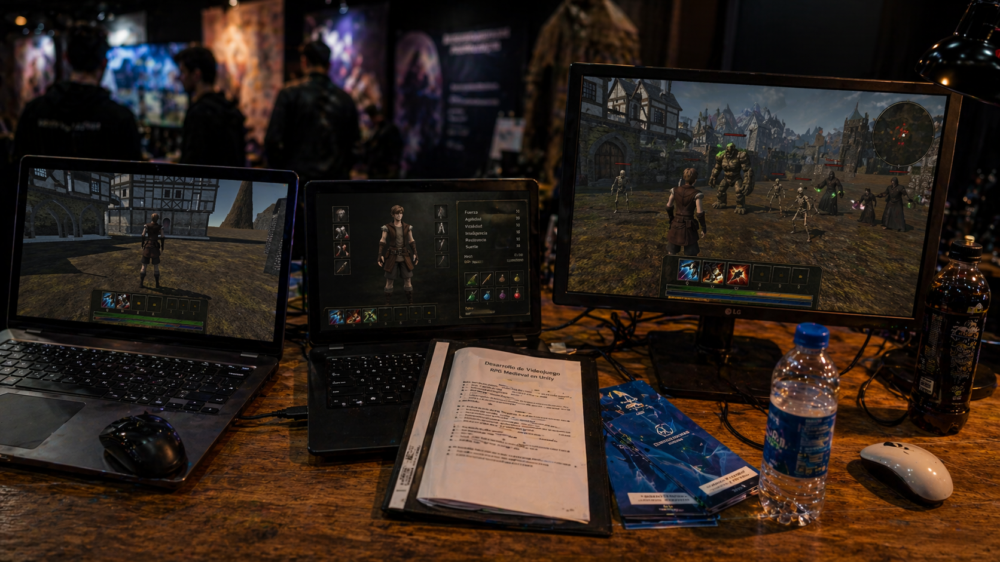

Jumping Kingdom Studios
Jumping Kingdom Studios es un estudio creativo enfocado en el desarrollo de videojuegos y experiencias interactivas. A lo largo del proceso se exploran distintas ideas mediante prototipos, desde proyectos 2D desarrollados en GameMaker hasta la construcción de un primer proyecto más ambicioso en Unity. El enfoque está en iterar, probar mecánicas y construir sistemas sólidos que funcionen más allá de lo visual, combinando diseño, tecnología y aprendizaje constante. Cada proyecto representa un paso en la evolución del estudio, buscando mejorar en cada etapa y desarrollar experiencias cada vez más completas y coherentes.
Highlights

RPG Project
Desarrollado en Unity, este es un juego 3D ambientado en un mundo de fantasía medieval donde el jugador progresa enfrentando enemigos en un entorno abierto, mejorando sus armas y habilidades mientras avanza en una narrativa que da sentido a su misión. Inicialmente concebido como un MMORPG, el proyecto comienza con una experiencia offline centrada en el combate contra criaturas como lobos salvajes, esqueletos, nigromantes y golems, cada uno con comportamientos únicos. El mundo se construye con una fuerte identidad visual mediante escenarios medievales detallados, incluyendo aldeas, castillos y estructuras diseñadas para reforzar la inmersión y el desarrollo del jugador.
Presencia en escenarios de la industria
Llevamos nuestros mundos a escenarios clave del desarrollo de videojuegos, donde presentamos experiencias jugables en vivo y mostramos la evolución de nuestros proyectos en entornos profesionales. Cada instancia es una oportunidad para validar ideas, observar cómo los jugadores interactúan con nuestras mecánicas y pulir cada detalle en base a esa experiencia directa. No solo exhibimos lo que hacemos, sino que construimos conexión real con la comunidad, transformando cada presentación en un paso más hacia la creación de universos sólidos, inmersivos y memorables.


Forjando el mundo
Cada escenario nace desde su forma más esencial, donde la estructura, la escala y la disposición del espacio definen la base de la experiencia. En esta etapa se construye el esqueleto del mundo, estableciendo el ritmo de exploración, los puntos de conflicto y la lógica del combate. Es aquí donde las ideas toman forma real, permitiendo iterar, ajustar y dar coherencia al entorno antes de su evolución visual, asegurando que cada rincón tenga un propósito dentro de un universo sólido y construido con intención.